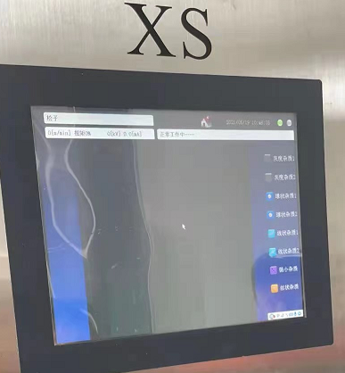
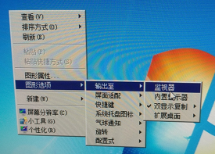
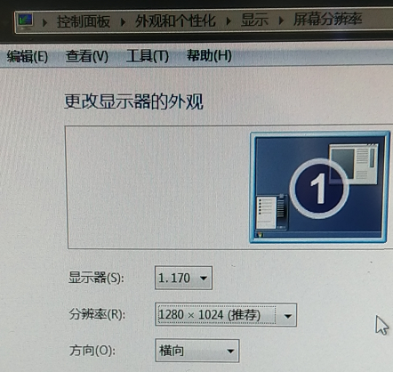

情况一：软件界面上文字都变成“not found”如何解决？
解决方法：
一、进入设置界面，选择“系统设置”，在左上角选择合适的语言包（注：若中文直接点击第一个按钮并点击保存）。
二、检查各项参数是否被更改，重新调节各项参数。
情况二：开机自检显示“采集卡打开失败”如何解决？
解决方法：
一、打开工控机外部罩壳，重新插拔内部的采集卡，并查看是哪种类型的采集卡，如下图：

图一：EPIX采集卡实物

图二：DALSA采集卡实物
二、根据采集卡种类，在“设置”-“系统设置”界面中选择正确的采集卡，点击保存后重新启动软件
三、若执行步骤1和2后问题依然存在，则需要卸载并重新安装采集卡驱动，步骤如下：
1、查看操作系统（32位还是64位）
2、卸载原有采集卡驱动，epix卡-在设备管理器中右键卸载，dalsa卡-在控制面板中卸载，如下图：

3、若执行步骤1和2后问题依然存在，则重新安装采集卡驱动驱动
（1）epix采集卡
（2）dalsa采集卡
情况三：开机自检显示“PLC连接异常/OPC连接异常”如何解决？
解决方法：
鼠标右键打开右下角网络图标，选择“打开网络和共享中心”，修改PLC连接的Ip地址，如下图：

情况四：开机后图像分辨率错误如何解决？
解决方法：

如上图所示：分辨率出现了问题

先将图形选项——输出至——监视器。

再调整分辨率为1280*1024，问题解决。